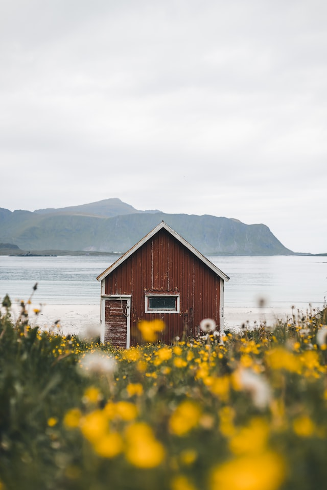
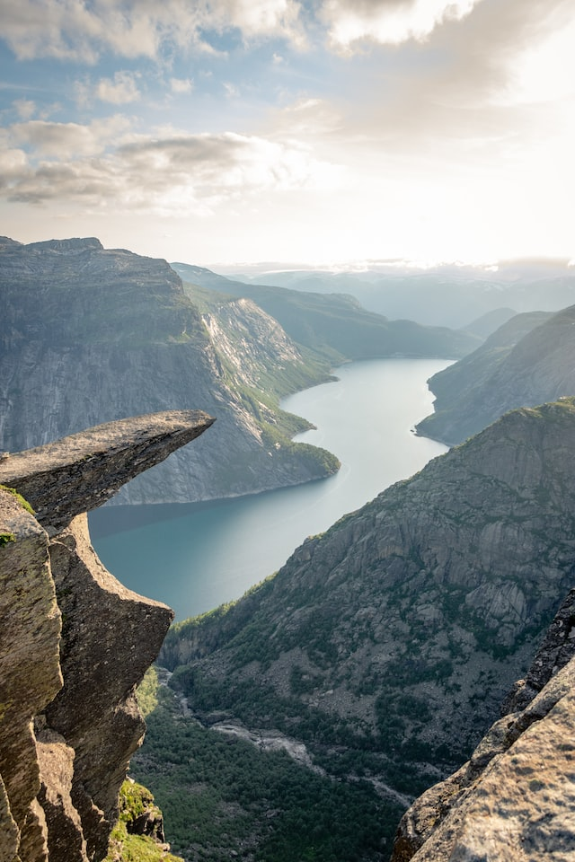
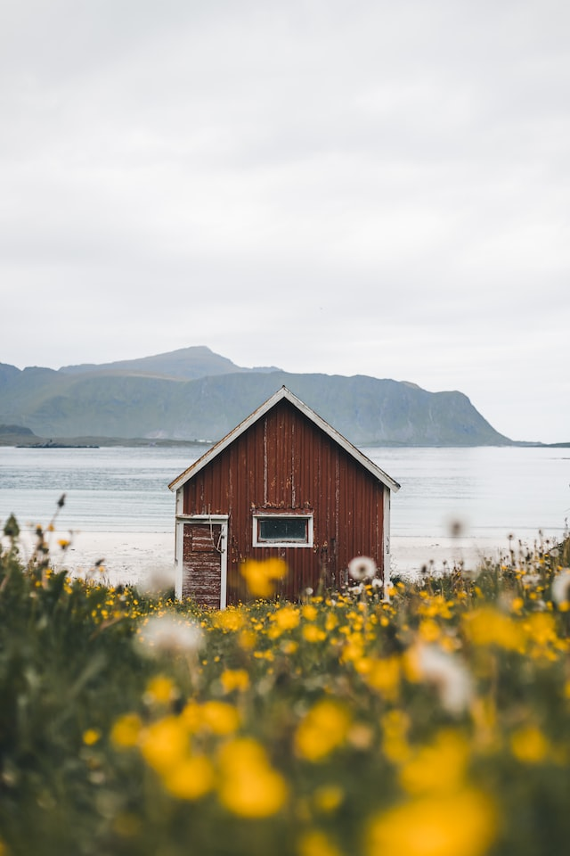
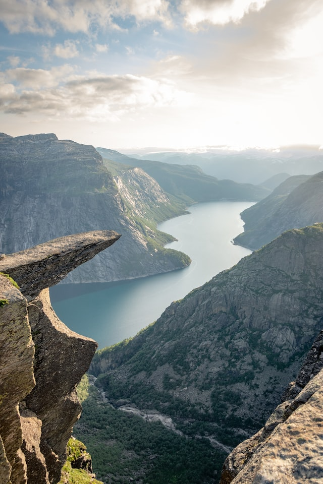

about
Norway, a country of outstanding natural beauty and raw sublime power, with dramatic waterfalls, crystal clear fjords, majestic mountains, and spectacular glaciers. If that hasn’t convinced you to pack your bags and plan a Norway road trip, hopefully, this blog post can offer up some inspiration on what you can expect from one of the most beautiful countries in the world and one of the best places to visit in Europe.
If you’re planning a Norway road trip and are wondering how you can possibly experience all of the best adventures this beautiful country has to offer, all within 2 weeks, you’re in the right place.
In this blog post, I’m going to share our 2-week Norway road trip itinerary with you, featuring our top places to visit in Norway, top things to do in Norway and tips from our very own trip.
 


